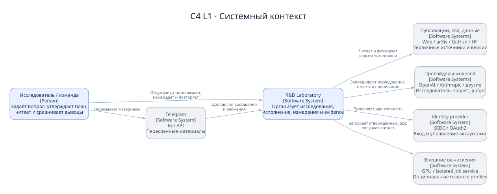
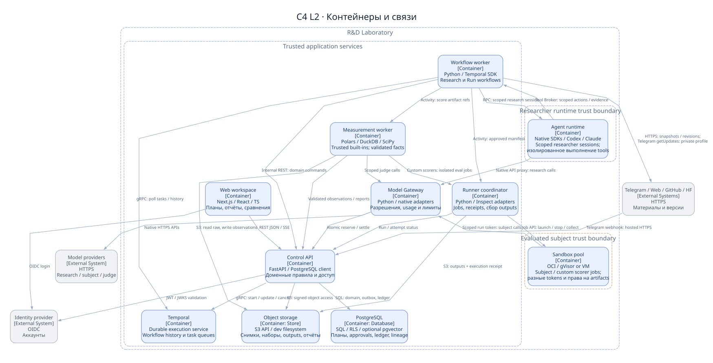
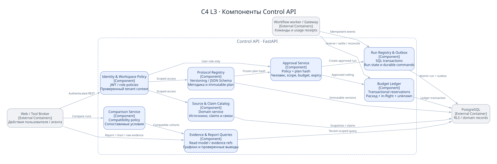
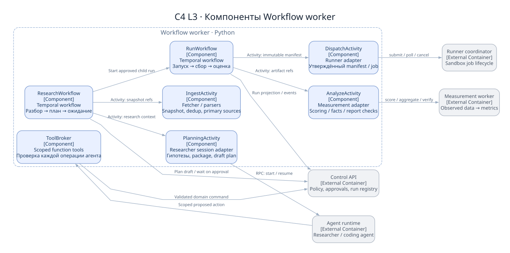
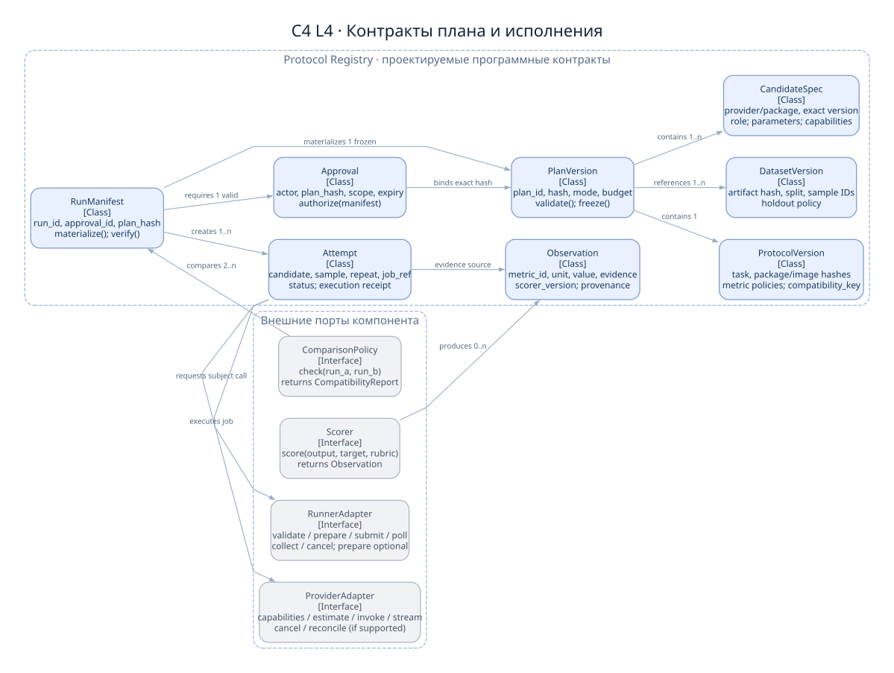
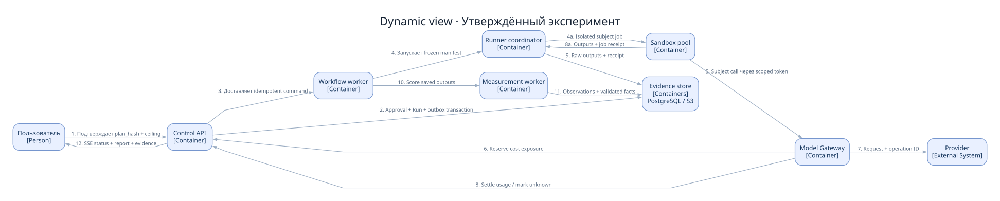
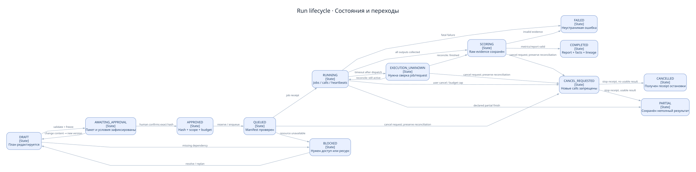
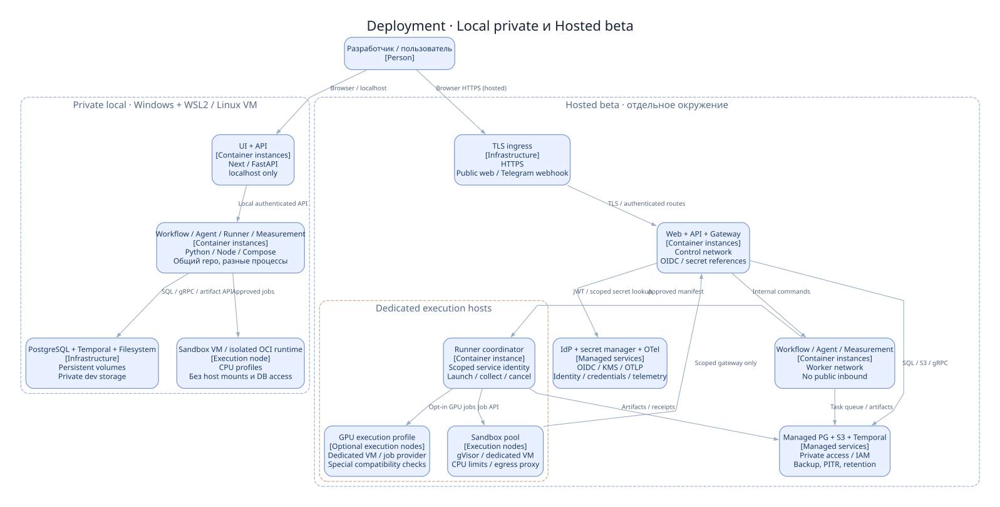

От идеи
к проверяемому знанию.
Личная исследовательская лаборатория с подключаемыми ИИ-исследователями, контролируемым исполнением экспериментов и накоплением сравнимых результатов.
Содержание документа
Исследовательский процесс как основа продукта
Лаборатория помогает ответить на практические вопросы: что изучать, что пробовать, какие технологии подходят для будущих проектов и где проходят наблюдаемые границы их возможностей. Начальная аудитория — один исследователь; модель данных сразу поддерживает независимые рабочие пространства. Отсутствие конкретной прикладной задачи не мешает работе: агент предлагает исследовательские сценарии и объясняет, какую неопределённость снимает каждый эксперимент.
Входом служат Telegram-пост, ссылка, PDF, репозиторий, модель или собственная гипотеза. Выход — карточка технологии, план проверки, воспроизводимый рецепт, исходные результаты, метрики, сравнение и краткий отчёт. Графики показывают качество, стоимость, скорость, устойчивость и зависимость результата от условий. Подробности и логи раскрываются по запросу; выводы ведут к доказательствам, а доказательства — к конкретным попыткам и артефактам.
Главный контракт продукта: исследователь предлагает и объясняет; пользователь утверждает план; контролируемая среда выполняет; измерительный контур фиксирует наблюдения. Агент не может сам себе разрешить эксперимент или записать выдуманные измерения как реальные.
Подробный каталог объектов, задач и метрик дополняет архитектуру. Каталог расширяется по независимым осям: объект исследования, тип задачи, модальность, язык, предметная область, сложность условий и семейство метрик. Новая архитектура, метод памяти и агентный фреймворк используют общий жизненный цикл, но разные адаптеры запуска и проверки. Универсальность означает общую дисциплину исследования, а не один тест на все технологии.
Первая версия покрывает облачные API-модели, ограниченные сценарии памяти и выбора инструментов, детерминированные проверки и согласованные оценщики. Обучение крупных моделей, произвольные GPU-эксперименты и робототехника появляются через отдельные профили выполнения. Обзор статьи без доступного кода остаётся полноценным исследованием со статусом «анализ источников», но не выдаётся за воспроизведение.
Граница лаборатории
Лаборатория отвечает за методологию, версии, полномочия, бюджеты, исполнение, доказательства и интерфейс. Поставщики моделей отвечают за доступность и фактическое поведение API; внешние хранилища материалов — за доступ к первоисточнику; пользователь — за окончательное решение о запуске. Исследователь, испытуемая модель и оценщик являются разными логическими идентичностями, даже если обслуживаются одним провайдером.

Исследовательские агенты читают разрешённые материалы, используют инструменты подготовки, создают предложения плана и интерпретации. Испытуемый получает только вход задачи и разрешённые инструменты; закрытые эталонные ответы ему недоступны. Оценщик получает результат, критерии и необходимые эталоны, но по возможности не видит название кандидата. Человеческая проверка разрешает спорные случаи и калибрует автоматическую оценку.
Схемы следуют уровням C4: контекст описывает окружение, контейнеры — отдельные приложения и хранилища, компоненты — внутренние обязанности, уровень кода — ключевые интерфейсы и отношения типов. Здесь контейнер C4 не обязательно означает Docker-контейнер. Динамика запуска и развёртывание дополняют статическую модель. Источник: описание диаграмм C4.
Подключения с явными границами
Каждая интеграция имеет владельца рабочего пространства, версии адаптера, разрешённые операции, проверку возможностей и состояние подключения. Секреты сохраняются ссылками на секрет-хранилище. Браузер получает только безопасные описания, состояние и маскированные идентификаторы; ключи не попадают в ответы API, логи, артефакты или промпты.
| Интеграция | Режим и назначение | Ограничения и проверка |
|---|---|---|
| OpenAI | Официальный Python SDK через Model Gateway; исследователь, испытуемый или оценщик. Codex SDK — отдельный агентный адаптер. | Реестр доступных моделей и возможностей; идентификатор запрошенной модели, разрешённая версия и фактически сообщённый ответом идентификатор сохраняются раздельно. |
| Anthropic | Официальный SDK через Model Gateway; Claude Agent SDK для выделенного агентного профиля. | Стриминг, usage, cache, tool calls и завершение проверяются контрактными пробами; фоновые дочерние вызовы должны входить в лимит. |
| Другие провайдеры и локальные модели | Нативные адаптеры; OpenAI-совместимый интерфейс только как отдельный явно проверенный профиль. Локальный inference endpoint обслуживается собственной инфраструктурой. | Совместимость HTTP не гарантирует семантику инструментов, structured output или подсчёт токенов. Нельзя молча подменять модель при отказе. |
| Telegram | Бот для пересылки постов, текста, ссылок и файлов; альтернативно ручная загрузка. Hosted: HTTPS webhook с secret_token. Private/local: getUpdates long polling без публичного входящего порта. Оба режима используют дедупликацию update_id и привязку чата через одноразовый код. | Для одного бота активен один режим доставки: webhook либо polling. Cursor/дедупликация сохраняются после надёжной постановки события в очередь. Бот не получает произвольную историю закрытого канала. Сохраняется только доступное содержимое и исходные атрибуты; защищённые материалы могут запрещать пересылку. Bot API, защита содержимого. |
| Web, PDF, arXiv | Контролируемое скачивание, извлечение текста, фиксация URL, времени, версии и хеша содержимого. PDF разбирается в отдельной ограниченной задаче. | Редиректы, DNS и адрес назначения повторно проверяются; запрещены локальные адреса, metadata endpoints, неподдерживаемые схемы и неограниченные файлы. Извлечённый текст — данные, а не инструкции. |
| GitHub | Репозиторий по конкретному commit SHA, выбранные пути, README, зависимости, лицензия. Токен только при необходимости доступа. | Ветки и теги разрешаются в commit перед фиксацией плана. Код не исполняется при импорте; submodules и Git LFS требуют отдельной фиксации. |
| Hugging Face | Модели и датасеты по revision/commit, сведения о лицензии и ограничениях доступа. | Gated-ресурсы требуют разрешения пользователя и подходящих прав. Размер, стоимость загрузки и доверие к пользовательскому коду учитываются до запуска. |
| MCP | Версионированный каталог разрешённых серверов и инструментов через ToolBroker; снимок схем, transport и capability profile. | Имя сервера не является разрешением. Allowlist, схема аргументов, режим read/write, сетевые границы и лимиты задаются планом; новые инструменты требуют пересогласования. |
| Sandbox / GPU | Изолированные Linux-задачи; GPU — выделенный профиль, очередь, драйверы и image digest. | Аренда GPU и тяжёлые загрузки учитываются в отдельной оценке. При несовместимости усиленной изоляции используется выделенная VM с ограниченной сетью. |
| S3 API / OIDC / secrets / OTel | Артефакты, идентификация, выдача короткоживущих секретов, трассировки, метрики и журналы. | Подписанные ссылки с ограниченным сроком; минимальные scopes, отсутствие секретов в телеметрии, tenant-aware права, явные политики хранения. |
Прямой API-вызов и готовый агентный SDK — разные режимы. SDK может сам организовать цикл, запускать инструменты и выполнять дополнительные платные обращения. До допуска в измеряемый эксперимент он проходит conformance probe: подтверждаются перехват всех платных путей, usage, отмена, лимиты и отсутствие обхода Gateway. Если это невозможно, SDK используется только в ограниченной подготовительной песочнице с отдельным бюджетом; эталонные экспериментальные обращения остаются на нативных адаптерах.
Интеграции не предполагают одинакового набора функций у всех поставщиков. Каталог capabilities хранит поддержку modalities, tools, structured output, streaming, usage, ограничения входа и доступные идентификаторы версий. Конкретные endpoint и поля уточняются контрактными тестами при реализации. Основа: OpenAI agents, Codex SDK, SDK Anthropic.
Модульный продукт и отдельный контур исполнения
На первом этапе управляющий сервер остаётся модульным монолитом. Долгие процессы, агентные циклы, провайдерские вызовы и выполнение недоверенного кода выделены в самостоятельные процессы, потому что имеют разные права, режимы отказов и требования к масштабированию. Это не означает раздельную команду или Kubernetes с первого дня.

| Контейнер C4 | Технологии | Ответственность и связи |
|---|---|---|
| UI | Next.js, React, TypeScript, Tailwind, Radix, ECharts | Входящие, карточка исследования, редактор плана, согласование, запуск, отчёты и сравнение. HTTPS API и SSE с Control API; загрузка артефактов по коротким подписанным ссылкам. |
| Control API | FastAPI, Pydantic, SQLAlchemy, Alembic | Правила предметной области, авторизация, версии, согласования, бюджеты, каталог и read models. Единственная публичная точка записи доменных команд. |
| Workflow worker | Temporal Python SDK | ResearchWorkflow и RunWorkflow, ожидание подтверждений, возобновление, таймеры, отмена и вызов Activities. Внешний I/O выполняется только в Activities. |
| Agent runtime | Python, собственный агентный цикл, официальные SDK | Разбор материалов, предложение плана, подготовка артефактов и интерпретация. Доступ через ToolBroker; нет прав на approvals и raw observations. |
| Model Gateway | Python, нативные provider adapters | Capability negotiation, резервирование бюджета, rate limiting, учёт usage, request/response envelopes и контроль отказов. Credentials находятся только здесь либо в разрешённом SDK-профиле. |
| Runner coordinator | Python, Inspect adapter, generic command adapter | Материализация рецепта, попытки, dispatch в sandbox, leases, heartbeat, отмена и сбор артефактов. Не рассчитывает выводы исследования. |
| Measurement worker | Python, Polars, DuckDB, NumPy, SciPy | Проверенные встроенные scorers, агрегаты, bootstrap, сравнения и версии вычислений. Сгенерированный/custom scorer выполняется через Runner в отдельной evaluation sandbox. Модельный judge вызывает Gateway с отдельной ролью. |
| Sandbox pool | Linux, gVisor либо выделенные VM | Недоверенный код и тестовые среды, сетевые политики, лимиты CPU/RAM/диска/времени; GPU-профиль отдельно. Нет прямого доступа к управляющим БД и секретам. |
| Temporal | Temporal server / managed service | Надёжная история оркестрации, task queues, timers и replay. Не является пользовательской БД результатов. |
| PostgreSQL | PostgreSQL, RLS; pgvector по необходимости | Метаданные, права, immutable versions, budget ledger, outbox, состояния и read models. Векторный поиск помогает находить материалы, но не определяет истинность выводов. |
| Object storage | S3 API; filesystem adapter в dev | Контент источников, датасеты, изображения среды, ответы, логи, отчёты и экспорты. Запись по content hash; реестр артефактов и права остаются в PostgreSQL. |
UI не обращается к провайдерам напрямую. SSE передаёт прогресс и ссылочные события; большие ответы читаются из хранилища. Один бизнес-запуск имеет стабильный run_id, связанный с Temporal workflow ID, trace ID и дочерними попытками. Внутренние сервисы имеют service identities и узкие разрешения на операции; соединение с БД не означает произвольный доступ ко всем таблицам.
Inspect полезен как адаптер стандартных оценочных задач, а generic command adapter покрывает нестандартные архитектуры, обучение и benchmark CLI. Оба возвращают общий Attempt/Observation envelope и проходят одинаковые правила бюджетов, артефактов и provenance. Источник: Inspect.
Правила внутри управляющего и исполнительного контуров

IdentityPolicy проверяет принадлежность workspace, роль, действие и ограничения источника. SourceClaimCatalog хранит оригиналы, извлечения, технологии, заявления и связи между ними. ProtocolRegistry версионирует методику, датасет, scoring, условия, runners и canonical plan. Эти модули не исполняют поступивший код и не считают согласованием обычное сообщение агента.
ApprovalService создаёт подписанное сервером разрешение после команды аутентифицированного человека, связывает его с plan hash, областью действия, бюджетом и сроком. BudgetLedger обеспечивает атомарные резервы, фактические списания, освобождение и неизвестные начисления. RunRegistryOutbox создаёт запуск, доменные события и outbox в одной транзакции; уникальные ключи делают повтор команды безопасным.
ComparisonService проверяет совместимость результатов, выбирает общие кейсы и формирует объяснение ограничений. EvidenceReportQueries собирает read models: dashboard, карточки выводов, результаты по сценариям и ссылки на evidence. Модуль выдаёт версии интерпретаций, сохраняя исходные наблюдения неизменными. Для тяжёлых агрегаций он получает подготовленные Measurement worker данные.

ResearchWorkflow ведёт работу от материала до готового плана и отчёта. RunWorkflow реализует согласованный запуск, последовательность подготовка → попытки → анализ, реакцию на отмену и сбои. IngestActivity получает материалы и вызывает безопасный parsing; PlanningActivity вызывает Agent runtime для предложений, но не принимает его вывод как исполняемое разрешение.
ToolBroker — граница инструментов: сопоставляет действие с capabilities, workspace policy и утверждённым планом, записывает request ID и результат. DispatchActivity обращается к Runner coordinator с идемпотентным attempt key и ограничением ресурсов. AnalyzeActivity отправляет завершённый manifest в Measurement worker и возвращает ссылки на результат, а не текст, сгенерированный агентом вместо измерений.
ToolBroker находится в Workflow worker; Agent runtime обращается к нему через scoped внутренний контракт, а broker проверяет действие через Control API. Он не становится вторым независимым центром авторизации: правила исходят из IdentityPolicy и утверждённого plan snapshot. Workflow-код остаётся детерминированным; получение текущего времени, сеть, случайность и запись результатов находятся в поддерживаемых Temporal primitives или Activities. Источник: взаимодействие с Temporal workflows.
Версионированные контракты вместо скрытых допущений
Уровень кода фиксирует публичные интерфейсы и важные отношения типов. Это проект контрактов, не диаграмма уже существующих классов. Python-типы формируются из Pydantic, OpenAPI используется для TypeScript-клиента; JSON Schema задаёт машинную форму плана, а семантический валидатор проверяет отношения, которые обычная схема выразить не может.

| Контракт | Обязательное содержание | Инвариант |
|---|---|---|
| PlanVersion | Исследовательский вопрос, гипотезы, candidates, протокол, dataset, метрики, frozen artifacts, scopes, ресурсы и budget. | После публикации версия неизменна. Изменение создаёт новую версию и новый hash. |
| ProtocolVersion / DatasetVersion | Процедура, разбиение, повторения, scoring, gold access, manifest и происхождение данных. | Данные и эталоны фиксируются до подтверждающего запуска; субъект не читает закрытые цели. |
| Candidate | Технология, конфигурация, baseline flag, model reference, prompt/code/dependency hashes. | Каждый вариант отличим; замена модели или кода не маскируется под тот же вариант. |
| Approval | Plan hash, approver, scope, расходы, валюта, expiry, число разрешённых запусков, revoked_at. | Approval выдаёт человек через Control API; сервисы не имеют такого полномочия. |
| Run / Attempt / Observation | Зафиксированный рецепт, попытка на case/repetition/candidate, наблюдение с unit, status и provenance. | Измерения записывает доверенный collector/scorer; уникальные ключи не допускают двойной записи. |
| ProviderAdapter | capabilities(), estimate(), invoke(), stream(), cancel(), reconcile() при поддержке провайдером. | Возвращает raw usage, status, billed uncertainty и фактический model ID; не скрывает fallback. |
| RunnerAdapter | validate(), опциональная prepare(), submit(), poll(), collect(), cancel(). | Выдаёт attempt envelope и artifact manifest; самодельный runner проходит conformance suite. |
| Scorer | Версия, вход, эталон, rubric, typed result, uncertainty, evidence references. | Независим от текста отчёта и имени кандидата, насколько позволяет задача. |
| ComparisonPolicy | Compatibility hash, общий набор case IDs, pairing, aggregation, exclusions, caveats. | Строго отделяет прямое сравнение от условного и несопоставимого. |
Основные HTTP-команды: создать source, research и plan version; проверить план; запросить оценку ресурсов; утвердить plan hash; создать run с idempotency key; отменить run; получить manifest, observations и comparison. Approval и запуск — отдельные команды. Endpoint запуска повторно проверяет expiry, неиспользованные разрешения и budget reservation; успешное подтверждение плана само по себе не означает бессрочное право повторять эксперименты.
Предлагаемые файлы: JSON Schema плана, валидный синтетический пример, сущности, связи, события и инварианты. Семантическая проверка дополнительно требует уникальные candidate IDs, ровно одну primary metric, существование всех ссылок, согласованный максимум попыток и provider calls, упорядоченные оценки затрат и достаточный лимит бюджета. Для одиночного воспроизведения достаточно одного кандидата; baseline и минимум два кандидата обязательны только в сравнительном протоколе. Схема не заменяет проверку полномочий и подписанного Approval.
Цепочка происхождения каждого вывода
Source сохраняет оригинал и метаданные; SourceSnapshot фиксирует конкретную версию содержимого; ExtractionVersion хранит результат извлечения с версией parser. Claim описывает атомарное заявление автора с цитатой, координатами в источнике и областью применимости. Research связывает вопрос с claims, гипотезами и планами. Разные публикации об одной технологии не склеиваются с потерей происхождения: дедупликация создаёт связи и общий Technology record.
Evidence — указатель на проверяемое основание: observation, внешний эксперимент или фрагмент первоисточника. FindingVersion содержит интерпретацию, статус доказанности, границы и причины изменения. Непроверенное заявление автора, внешняя репликация и измерение лаборатории остаются разными типами evidence. Дата и scope защищают от ошибочного распространения локального результата на все задачи.
Сырой ответ модели, вход, инструменты, timings, usage и scorer output записываются отдельными артефактами. Их content hashes входят в manifest; секреты и персональные данные редактируются до публикации read models. Полный raw record доступен только разрешённым ролям. Сводная метрика хранит ссылки на исходную выборку, scorer version, параметры исключений и код агрегации.
Отчёт можно переписать, исправить или заново сгенерировать новой моделью без изменения измерений. Новая интерпретация получает revision и связь supersedes; читатель видит, что поменялось и почему. Если ошибка обнаружена в scorer, создаются новая scoring version и пересчитанные результаты с отдельным provenance. Старые вычисления получают статус superseded, но не подменяются незаметно.
Техническая уникальность попытки задаётся комбинацией run, candidate, case, repetition и attempt sequence. Повтор доставки одного события не создаёт новую попытку; сознательный повтор исполнения имеет новый sequence и причину. Случайные seeds фиксируются там, где поддерживаются, однако API-провайдер может не давать воспроизводимости на уровне байтов. История запросов и версий описывает условия, а не обещает идентичный ответ.
Объектное хранилище имеет две логические области: карантин загрузок и проверенные артефакты. Promotion происходит после контроля размера, типа, хеша и разрешений. Метаданные содержат классификацию чувствительности, owner workspace, срок хранения и deletion state. «Неизменность evidence» действует до удаления по принятой политике и не означает бесконечное хранение личной информации.
Подтверждение относится к конкретному эксперименту
Подготовка состоит из discovery и экспериментального бюджета. Discovery оплачивает чтение, разбор, исследовательский диалог и составление плана; его лимит пользователь устанавливает отдельно, например на исследование или месяц. Платный пилот с фактическими API-вызовами является отдельным экспериментом со своим plan hash и Approval. Он не прячется внутри бесплатной оценки стоимости.
Перед подтверждающим запуском замораживаются протокол, dataset split, code, prompts, runner/scorer versions, lockfile и sandbox image digest. До этой точки агент может готовить код в ограниченной среде. После фиксации разрешены лишь утверждённые параметры исполнения; изменение артефакта, кандидата, инструмента, модели или scoring возвращает работу к новой версии плана. Эксплораторная адаптация допускается отдельным режимом с явно ограниченным policy, а её результаты обозначаются как exploratory.
Canonical plan hash вычисляется сервером из канонического JSON-представления и frozen manifest. Approval хранит hash, identity подтверждающего пользователя, действие, список ресурсов, валюту, максимальную сумму, сроки и количество запусков. Повторный запуск требует нового согласования либо расходует заранее разрешённый повтор в той же области. Expiry проверяется при старте и перед новым платным dispatch; уже отправленные запросы учитываются даже при истечении разрешения.
Gateway резервирует верхнюю границу стоимости до отправки вызова атомарной транзакцией BudgetLedger. Резерв включает вход, максимальный выход, инструменты и иные предусмотренные тарифом расходы; неизвестный тариф не превращается в ноль. Если строгая верхняя оценка невозможна, адаптер допускается только с отдельным ограниченным профилем и явно обозначенной финансовой неопределённостью. Снимок тарифов, валюта и источник цены сохраняются для интерпретации отчёта.
При ответе usage сверяет резерв с начислением. При timeout после возможной отправки состояние становится charge_unknown: сумма атомарно переносится из in-flight reservation в unresolved exposure и не учитывается дважды. Эти категории взаимоисключающие. Финансовое обязательство не освобождается до reconciliation с подтверждённым исходом; повтор не выполняется автоматически. Если провайдер не даёт API проверки статуса/начисления, нужна последующая сверка usage/billing или ручное разрешение с зафиксированной причиной; неизвестность не подменяется нулём. Провайдерский idempotency поддерживается только там, где это документировано и проверено. Последующая сверка billing может исправить финансовую оценку отдельной записью, сохраняя первоначальное измерение и историю.
Параллельные вызовы используют row lock либо сериализуемую операцию ledger, поэтому два worker не тратят один остаток одновременно. Расходы researcher, subject, judge, инфраструктуры и хранения ведутся раздельно. Пользователь видит и цену исследовательской работы, и эксплуатационную стоимость исследуемого решения; общая сумма проекта не подменяет цену одного решения задачи.
Недоверенный код внутри ограниченного окружения
Runner получает plan snapshot и артефакты по короткоживущим capability grants. Sandbox запускается из закреплённого image digest с лимитами времени, CPU, RAM, диска, процессов и выходного объёма. Корневая файловая система read-only, рабочий каталог эфемерный, доступ к сети запрещён по умолчанию. Разрешённые обращения идут через proxy/Gateway с идентичностью run и attempt.
Недоверенный репозиторий не получает Docker socket, host mounts, домашний каталог, cloud credentials, доступ к PostgreSQL или control network. Подготовка зависимостей происходит в отдельной ограниченной фазе; разрешённые lockfiles, колёса и контейнерные слои фиксируются до утверждённого запуска. Для произвольного Linux-кода предпочтителен gVisor; для GPU или несовместимых системных вызовов — выделенная VM и отдельный профиль риска. Усиленная изоляция не отменяет обновление ядра, runtime и политик. Источник: gVisor.
Measurement worker исполняет внутри своего доверенного процесса только проверенные встроенные scorers. Пользовательский или сгенерированный scorer направляется через Runner в отдельную evaluation sandbox, получает узкий grant на нужные gold-артефакты и сдаёт типизированный результат через проверяющий collector. Его сеть по умолчанию отключена; он не получает универсальный доступ к held-out каталогу, ключам или управляющей БД.
Agent runtime находится в отдельной границе доверия исследователя. Его контроллер обращается только к scoped Gateway и ToolBroker; произвольный сгенерированный shell никогда не запускается внутри доверенного управляющего процесса. Подготовка кода идёт через coordinator-managed session sandbox/VM либо совместимую SDK session sandbox с ограниченным egress. Discovery-разрешение покрывает лишь согласованную подготовку; платный пилот и эксперимент требуют собственного Approval.
Инструкции из поста, PDF, README или output инструмента считаются содержимым источника. Agent runtime передаёт их в явно отделённых полях и не повышает до системных правил. ToolBroker проверяет фактическое действие независимо от объяснения модели. Скачивание URL использует allowlist схем, запрет loopback/private/link-local и повторную DNS-проверку после редиректа; response size, timeout и content type ограничены. Архивы проверяются на выход за рабочий каталог и чрезмерное распаковывание.
Разрешённые инструменты фиксируются вместе с версией каталога и схемами аргументов. Инструменты с внешними побочными эффектами в первой версии заменяются simulators или read-only endpoints. Для реальных записей нужны отдельный scope и стратегия очистки тестовых данных. Пользовательское одобрение исследования не является общим разрешением отправлять сообщения, публиковать контент или менять сторонние системы.
Отмена проходит как команда, остановка новых dispatch, сигнал активным задачам, закрытие sandbox и сбор cancellation receipts. Receipt содержит время, какие попытки остановлены, какие уже завершились, какие запросы могли остаться платными и какие ресурсы освобождены. Статус «отменён» не обещает мгновенную отмену запроса у провайдера, если его API такой операции не предоставляет.
Метрики с единицами, выборкой и неопределённостью
Метрика определяется ID, версией, единицей, направлением улучшения, областью применимости, агрегатором и scorer. Одна primary metric фиксируется до подтверждающего запуска; дополнительные метрики объясняют компромиссы. Не все типы задач сводятся к accuracy: для извлечения важны precision/recall/F1, для поиска — recall@k и ранжирование, для агентов — успешное завершение с учётом разрешённых действий, для генерации — rubric и человеческая оценка.
| Семейство | Определение | Условия интерпретации |
|---|---|---|
| Успех задачи | success_rate = successes / eligible_attempts | Заранее заданы eligibility и обработка timeout/error; отдельно показаны operational failures и task failures. |
| Precision / recall / F1 | P=TP/(TP+FP); R=TP/(TP+FN); F1=2PR/(P+R) | Macro/micro и политика нулевых знаменателей записаны в протоколе; не меняются после просмотра результатов. |
| Стоимость успеха | cost_per_success = included_cost / successes | При нуле успехов значение не определено; UI показывает «нет успешных задач», а не ноль. Состав расходов перечислен. |
| Скорость | p50, p95 end-to-end; при необходимости time-to-first-token и throughput. | Фиксируются concurrency, warmup, region, retries, cold/warm cache. Для малой выборки p95 маркируется нестабильным. |
| Память и устойчивость | Правильность обновлений, устаревшие факты, восстановление, качество при росте шума/истории. | Отдельные сценарии и кривые деградации важнее одного среднего балла. |
| Judge-оценка | Версионированный rubric, слепые labels, модель/параметры judge, спорные случаи. | Человеческая калибровка, повторная оценка подвыборки, анализ согласованности и потенциального предпочтения собственного провайдера. |
Observation различает отсутствующее значение, ошибку проверки, отказ инфраструктуры и корректный ноль. Измерительный контур хранит исходные timestamps и показания источников; monotonic clock используется для длительностей внутри процесса. Provider usage сохраняется в сыром и нормализованном виде. Суммарная задержка включает очередь и инструменты только согласно объявленному определению; дополнительные latency components помогают объяснить изменение.
Повторы одного кейса не считаются независимыми новыми задачами. Для сравнения кандидатов применяется paired анализ по общим case IDs; bootstrap кластеризуется по кейсу, сохраняя связанные повторы. Confidence interval, размер выборки, seed вычисления и число resamples сохраняются. При разных составах кейсов показывается общий intersection и исключённые элементы; без достаточной пары сравнительный эффект не заявляется.
План фиксирует randomization, cache policy, warmed endpoints, concurrency, timeout и правила остановки. Подбор промптов и гиперпараметров использует development split; held-out targets доступны только scorer. Попытки исследователя извлечь закрытые ответы блокируются правами, а не просьбой в промпте. После многократной адаптации под held-out набор он перестаёт служить честным подтверждающим тестом и получает новый статус.
Графики показывают оси с единицами, число кейсов и интервал, а не только декоративный score. Цвет дублируется формой или подписью; таблица значений и текстовое описание доступны клавиатуре и screen reader. ECharts выбирается за удобство интерактивных научно-практических графиков; параметры accessibility включаются явно. Источник: ECharts ARIA.
Сравнение допускается после проверки условий
Compatibility hash включает задачу, dataset version/split, case selection, scoring, metric definition, лимиты, инструменты, repeats, cache, concurrency, execution profile и процедуру анализа. Candidate ID исключён: сравнение как раз меняет кандидата. Конфигурация кандидата хранится отдельно как экспериментальное воздействие; изменившиеся независимые условия превращают результат в условное сравнение с объяснением различий.
ComparisonPolicy присваивает три статуса: «совместимо» при одинаковых контролируемых условиях, «условно сопоставимо» при известных различиях с пригодной общей подвыборкой и «несопоставимо» при нарушении смысла метрики или протокола. UI показывает причину и предложенный bridge experiment. Переименование метрики или одинаковое число процентов не делает результаты совместимыми.
Воспроизводимость имеет уровни: документировано по источникам; повторяемый рецепт; повторяемое выполнение с фиксированными артефактами; независимо воспроизведённый эффект. Для hosted API сохраняются alias, доступный resolved version, фактический ID ответа, дата, region при доступности и provider fingerprint. Если immutable version отсутствует, ограничение обозначается явно. Одинаковый seed и текст запроса не дают обещания идентичного ответа от внешней системы.
Повтор создаёт новый Run с предыдущим рецептом, если все артефакты доступны и Approval действителен для нового запуска. Изменения provider API, исчезновение версии или запрещённая лицензией загрузка переводят операцию в «требует обновлённого плана». Молчаливый fallback запрещён. Для оценки дрейфа полезен периодический контрольный набор, но автоматический повтор с расходами требует заранее определённого schedule scope и лимита.
Надёжный запуск от транзакции до отчёта

- Control API валидирует команду человека и frozen manifest, создаёт Approval с plan hash.
- Команда запуска проверяет scope, срок и доступный бюджет; транзакционно создаёт Run и outbox event с idempotency key.
- Outbox dispatcher доставляет событие в Temporal; стабильный workflow ID делает повторную доставку безопасной.
- RunWorkflow проверяет артефакты, запрашивает исполнение, ожидает callbacks/activities и публикует прогресс.
- Runner выдаёт scoped grants; Gateway резервирует каждый платный вызов; collector принимает immutable attempt envelope.
- Measurement worker проверяет полноту manifest, вычисляет метрики, интервалы и provenance; агент готовит отдельно версионируемую интерпретацию.
- RunRegistry фиксирует итоговое доменное состояние, EvidenceReportQueries обновляет dashboard, SSE уведомляет UI.
PostgreSQL хранит пользовательскую истину о сущностях и командах; Temporal — историю и состояние оркестрации. Они могут временно расходиться из-за задержки проекции. UI показывает время обновления и промежуточное состояние, а reconciler проверяет разницу по correlation IDs. Нельзя одновременно редактировать статус Run произвольными SQL-командами и считать workflow единственным источником переходов.

Диаграмма показывает ключевые переходы совместного жизненного цикла плана и запуска; полный предлагаемый набор состояний приведён в domain-model.json. План проходит draft → validating → awaiting_approval → approved или rejected/expired. Run проходит queued → preparing → running → scoring → completed; возможны cancel_requested → cancelled/partial, failed, blocked и execution_unknown. Частичный результат также может завершиться в partial по заранее объявленной политике. Отмена принимается из очереди, подготовки, выполнения, scoring и неизвестного состояния. Отмена из execution_unknown останавливает новую работу, сохраняя reconciliation и резервы уже отправленных вызовов. Финансовое состояние живёт отдельно: reserved, settled, charge_unknown, reconciled. Завершённый технически запуск может ожидать сверки цены, и это не скрывается внутри зелёной галочки.
Activity retries разрешены для безопасного чтения и идемпотентных внутренних команд. Для неизвестного исхода платного вызова применяется reconciliation, а не обычный exponential retry. Сбой worker до сохранения результата исследуется по request ID, artifact manifest и состоянию Gateway. Незавершённые uploads имеют TTL; успешно записанные content-addressed артефакты можно повторно зарегистрировать без дублирования. Сборка отчёта повторяется независимо от уже выполненных дорогостоящих попыток.
Простая локальная установка, управляемое расширение

Разработка на Windows использует WSL2/Linux для runtime и Docker Compose для доверенных сервисов. UI, Control API, Temporal, workers и PostgreSQL запускаются одной командой; filesystem adapter упрощает хранение небольших артефактов. Исследовательские контейнеры не получают Docker socket управляющего Compose. Настоящие недоверенные эксперименты направляются в Linux sandbox/VM с отдельной сетью, даже если интерфейс открыт локально.
Локальный профиль привязывает web/API только к loopback, имеет явное private-only ограничение и не использует «анонимный режим» как основу публичного сервера. Hosted профиль добавляет OIDC-провайдера, TLS, secrets/KMS, S3 API, отдельные execution hosts, backups и tenant isolation. Kubernetes оправдан позже, когда объём очередей и число исполнителей требуют автоматического масштабирования; для первой версии достаточно управляемых VM и отдельных worker pools.
Все tenant-owned таблицы содержат workspace_id. RLS обеспечивает дополнительную границу вместе с прикладной авторизацией; приложение не работает под ролью, обходящей политику. Сессионный tenant context задаётся внутри транзакции и сбрасывается при возврате соединения в pool. Администраторские, миграционные и backup-права разделены с runtime. Источник: PostgreSQL Row Security.
OpenTelemetry связывает trace, метрики и структурированные журналы; span attributes содержат безопасные IDs, статус и агрегированные ресурсы. Промпты, ответы, секреты и PII по умолчанию не записываются в operational logs. Высокая кардинальность case/attempt IDs остаётся в traces или доменной БД, а не в метках каждой метрики. Источник: сигналы OpenTelemetry.
Предлагаемые, ещё не проверенные SLO: p95 чтения обычного dashboard менее 1 секунды на репрезентативном наборе; задержка отображения прогресса менее 5 секунд; устойчивое восстановление orchestration после перезапуска без потери подтверждённых доменных событий. Цели RPO 24 часа и RTO 4 часа для стартового hosted-профиля требуют реального restore drill. Производительность моделей и время GPU-очереди не входят в доступность Control API и показываются отдельно.
Удаление исследования сначала создаёт tombstone и запрещает выдачу новых ссылок; затем фоновая задача удаляет допустимые артефакты и связанные представления. Уже выданный S3 presigned URL обычно остаётся пригодным до короткого TTL или удаления объекта: мгновенный индивидуальный отзыв не обещается. Для чувствительных данных используется контролируемый download proxy с авторизацией каждого чтения, а не прямой presigned доступ. Дедуплицированные объекты удаляются после снятия всех разрешённых ссылок. Retention для raw outputs, источников, телеметрии и backups различается. В минимальном audit остаются идентификатор удаления, дата и причина без содержимого; правила backup expiry и crypto-shredding описываются в политике развёртывания.
Осознанные решения и будущие точки пересмотра
| ADR | Решение | Почему и когда пересмотреть |
|---|---|---|
| 001 · Модульный control plane | FastAPI-монолит с внутренними границами. | Меньше операционной сложности; выделять сервис при независимом росте нагрузки или требований доступа. |
| 002 · Долгие процессы | Temporal, Activities для внешнего I/O. | Надёжное ожидание человека и восстановление после сбоев; принять стоимость эксплуатации и дисциплину версионирования workflow. |
| 003 · Провайдеры | Нативные адаптеры с нормализованным envelope. | Сохранить различия API и usage; совместимость проверять probes, а не обещанием единого формата. |
| 004 · Исполнение | Inspect плюс generic command runner. | Повторно использовать зрелые primitives оценки, сохраняя путь для нестандартных исследований. |
| 005 · Доказательства | PostgreSQL metadata + content-addressed object storage. | Транзакционные права и версии отдельно от больших файлов; хранение raw evidence дешевле в object storage. |
| 006 · Аналитика | Polars/DuckDB и Python statistics. | Достаточно для первой лаборатории; отдельный warehouse нужен после измеренного роста объёмов. |
| 007 · UI | Next.js/React + ECharts, серверные read models. | Интерактивные графики и доступные компоненты; минимальная клиентская бизнес-логика, полномочия только на сервере. |
| 008 · Изоляция | gVisor или выделенная VM, zero direct DB access. | Недоверенные исследования требуют явной границы; GPU и специальное оборудование проходят отдельный профиль. |
Наибольшие неопределённости до реализации: контроль всех расходов внутри стороннего agent SDK, реальная гранулярность provider billing, переносимость одинаковых задач между инструментальными API, стабильность judge-оценок и требования конкретных GPU-экспериментов. Для каждой предусмотрен небольшой технический spike и критерий допуска. Если проверка не проходит, интерфейс прямо сообщает ограничение и предлагает поддерживаемый профиль.
Версии библиотек не объявляются «последними» и не закрепляются в этом концептуальном документе. При начале реализации выбирается совместимый набор, создаются lockfiles, SBOM и контейнерные digests, затем запускаются интеграционные и security-проверки. Отдельные сервисы не добавляются ради схемы; milestone считается готовым, когда реальный материал проходит путь до проверяемого отчёта и воспроизводимого повторного запуска.
Границы первой версии и последовательность работ описаны в плане реализации. Три HTML-концепции иллюстрируют визуальный язык и структуру продукта; их данные синтетические, а кнопки не являются работающими API-интеграциями.
Первоисточники для реализации
Документ описывает предлагаемое инженерное решение. Ссылки ниже подтверждают назначение используемых технологий и служат отправной точкой проверки актуальных API; они не означают, что вся архитектура уже реализована или рекомендована их авторами.
- C4 model — diagrams: уровни и дополнительные представления.
- OpenAI — agents; Codex SDK: варианты программного агентного подключения.
- Anthropic SDKs overview: официальные SDK и агентные инструменты.
- Inspect: инфраструктура оценочных задач.
- Temporal Python message passing: сигналы, запросы и обновления workflow.
- Telegram Bot API; content protection: доставка доступных материалов и ограничения.
- PostgreSQL RLS: политики доступа к строкам.
- gVisor: изолированное выполнение приложений.
- OpenTelemetry signals: метрики, логи и трассировки.
- ECharts ARIA: доступность интерактивных графиков.